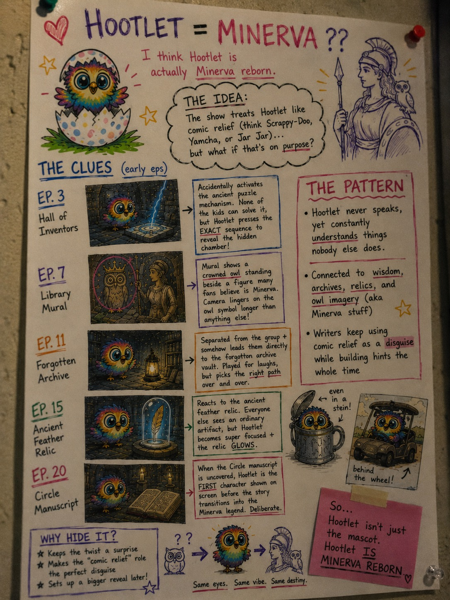

Just uploaded a new infographic compiling all the clues from the first 20 episodes that suggest Hootlet might actually be Minerva reborn.
I know this theory sounds ridiculous at first, but after rewatching the early episodes I noticed how often Hootlet gets connected to archives, relics, hidden knowledge, owl symbolism, and ancient history.
The infographic includes:

Would love to hear everyone's thoughts.